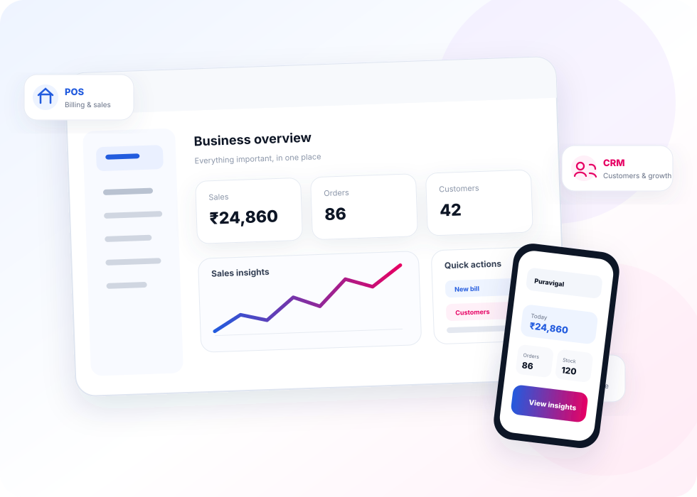

First release
Puravigal POS
Simple billing, sales and inventory for retail shops, cafés, restaurants, bakeries and similar businesses.
- Fast everyday billing
- Sales and inventory tracking
- Built for small teams
Puravigal is building practical software for micro and small businesses — starting with POS and growing into CRM, ERP and more.

Puravigal begins with one focused product for micro and small businesses. As the platform grows, more connected business tools will follow.
Simple billing, sales and inventory for retail shops, cafés, restaurants, bakeries and similar businesses.
Puravigal is being designed as a broader SaaS platform. New products and capabilities will be introduced only as they are ready.
See our approach →Clear screens and focused workflows instead of features you never use.
We design around the way micro businesses actually bill, sell, track and serve customers.
Start with one product today and move into a broader business platform when you need it.
Puravigal is being built primarily for micro and small businesses that need straightforward software without unnecessary enterprise complexity.
Puravigal POS is the first product, focused on everyday billing, sales and inventory for small retail and food businesses.
Puravigal is designed to grow into a broader business software platform. New products will be introduced over time as they are developed and ready for customers.
The free Standard release is being introduced first. Visit the POS page for the current product journey and access options.
Start with the tools you need today and grow into a connected business platform.